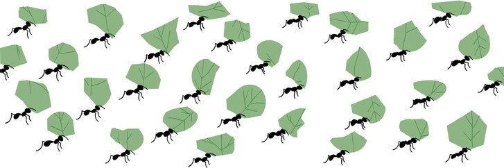

Genetic Evidence for Altruism
How are altruistic traits created, and spread?
- Altruistic traits usually spring up by random, as mutations and usually stick around because it helps a species indirect fitness and so the
genes are passed in throughout the species. For example in the prairie dogs, they have a greater chance of surviving if they can be notified of
the hawks and stay alive so the gene spreads through the population.
Evolutionary Standpoint of Altruism
- Understanding of the opposing thoughts of the causes and evolution of altruism
 - People often think that it would be hard for altruism to evolve because natural selection relies on an increase of direct fitness for a
trait to be expressed, but altruistic trait doesn’t usually result in that change in direct fitness and often comes with a penalty.
Although we aren’t considering sexual selection also must come into play, for example, male chimps may groom others for the attraction
of mates which because of sexual selection could cause the altruistic gene to be passed on to increase fitness related to sexual selection.